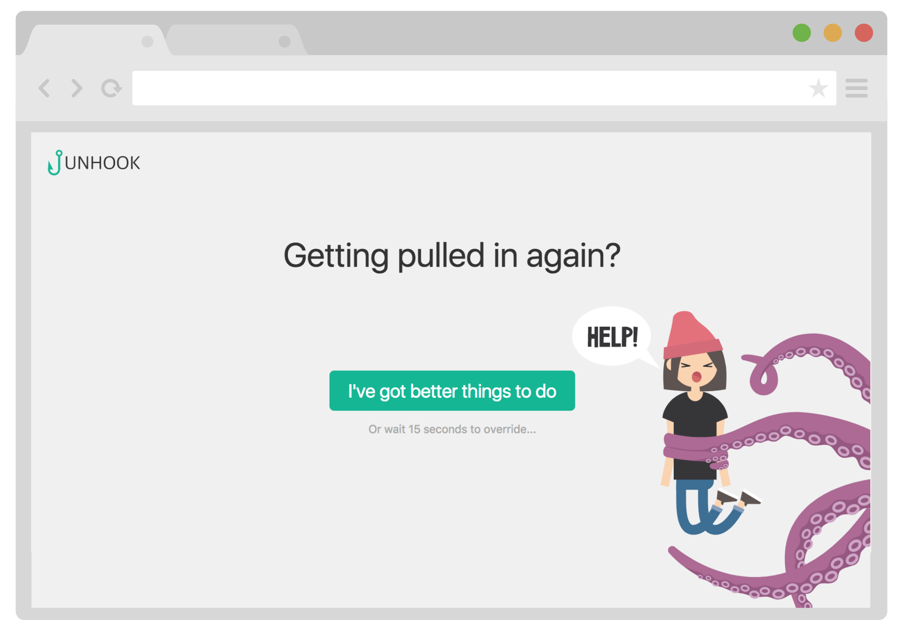

Unhook is a Google Chrome Web Browser extension that helps you break the habit of constant checking of social media websites.
When you try to access any website on Unhook blocklist you will be presented with a simple choice: close the window and continue with whatever you were doing, or wait for 15 seconds and get access to the blocked website.

By delaying gratification, and giving you time to process what you are doing you will consciously start breaking the time-wasting habits. This is a sustainable solution because you can still access the blocked websites when needed.
If you decide to access a website you will get a reminder every 5 minutes that you should probably be doing something else. You will again have to wait 15 seconds every time you want to override the reminder.